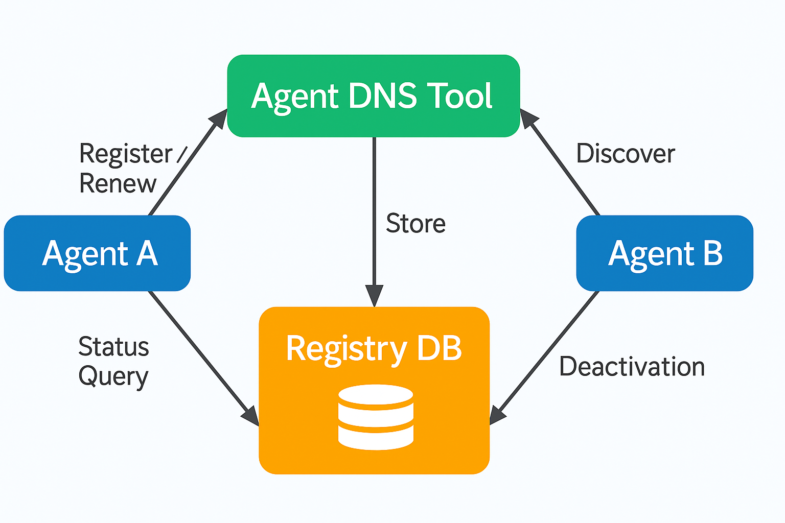

What is This?
This tool provides a secure, standards-compliant registry and lookup service for multi-agent AI systems, supporting registration, renewal, deactivation, and status queries for agents. Built for A2A/MCP environments, it uses JSON Schema and certificate validation for robust security.
Features
- Agent Registration – Register agents with certificate and metadata
- Renewal – Renew agent registration and update capabilities
- Deactivation – Deactivate an agent by name
- Status Query – Query current status (active/inactive) of any agent
- JSON Schema Validation – All requests validated for structure and content
How It Works
- Agents send registration/renewal requests with signed certificates
- Server validates requests against JSON Schemas and CA
- Agents can be deactivated or queried for status at any time

How agents interact with the DNS Tool: registration, discovery, status, and deactivation
Quick Start
- Clone the repo:
git clone https://github.com/kenhuangus/dns-for-agents.git - Install dependencies:
pip install -r requirements.txt - Run the APIs:
python agent_registration_api.py(see README for all endpoints) - Test with provided scripts or your own agent code
See the README for full documentation.